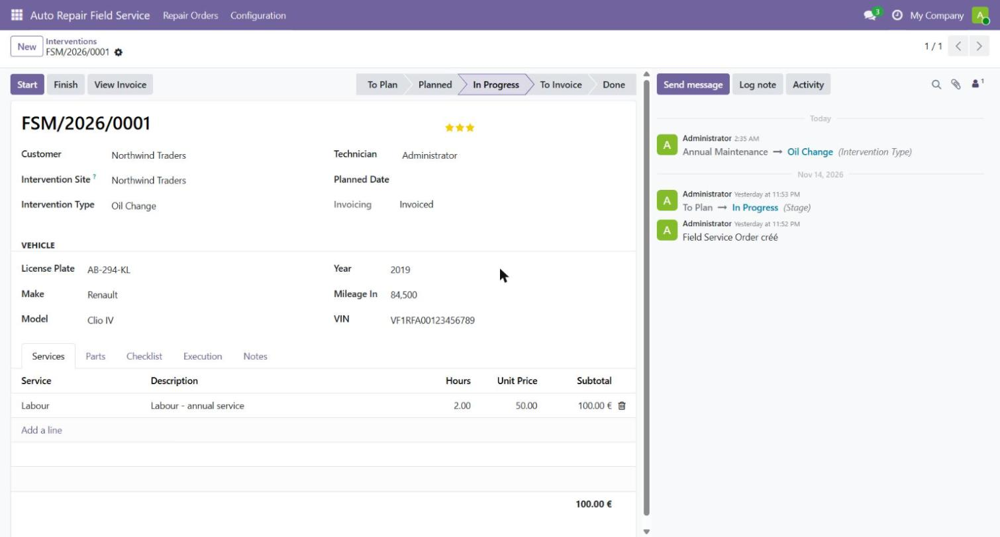
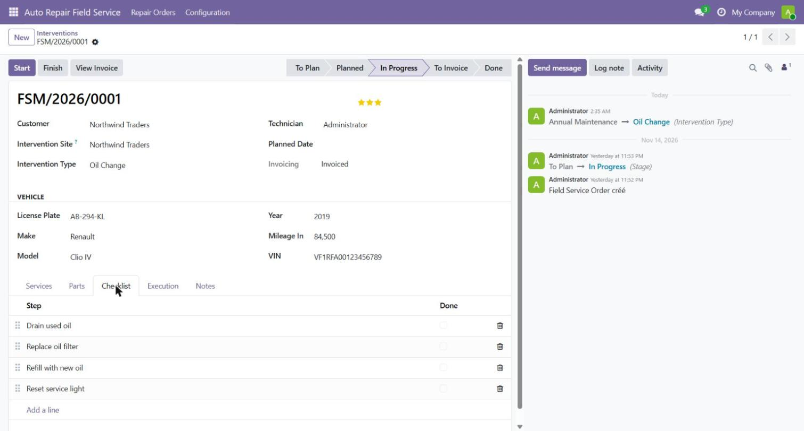
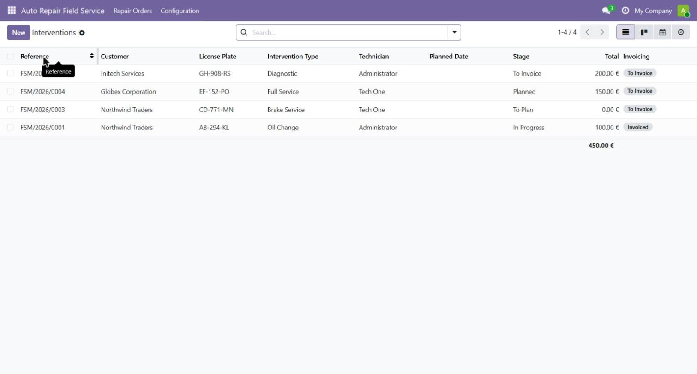

See it in action
Every repair order at a glance
The kanban board lines up each car by stage, from To Plan through Planned, In Progress and To Invoice. Number plate, job type, priority and the mechanic in charge all show right on the card.

The full vehicle record
Number plate, make, model, year, mileage in and VIN sit on the order itself, next to the labour and parts lines. Everything about the car and the job on a single screen.

A checklist for every job type
Each job type carries its own steps, ready to use. An oil change opens with drain the old oil, swap the filter, refill and reset the service light. The mechanic ticks as they go and nothing slips through.

From repair order to invoice
The order list shows the car, the job, the mechanic, the amount and where it stands on billing. One click on Create Invoice turns the labour and parts into an Odoo accounting entry.
